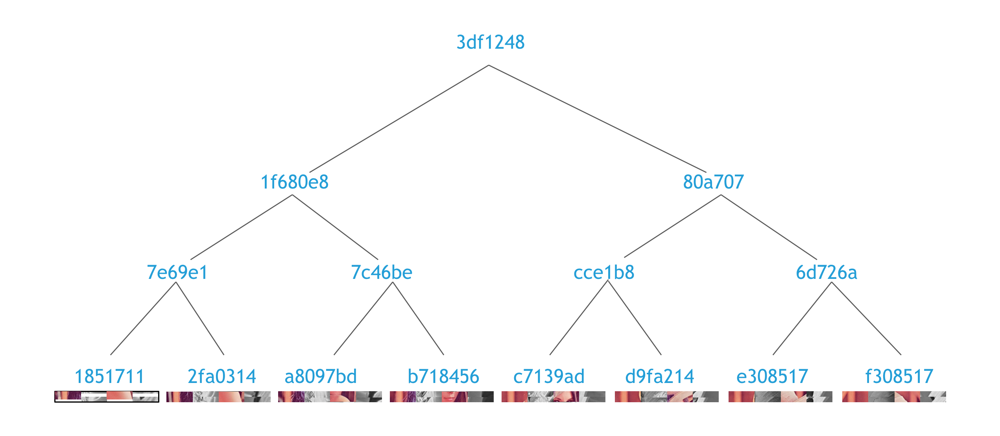
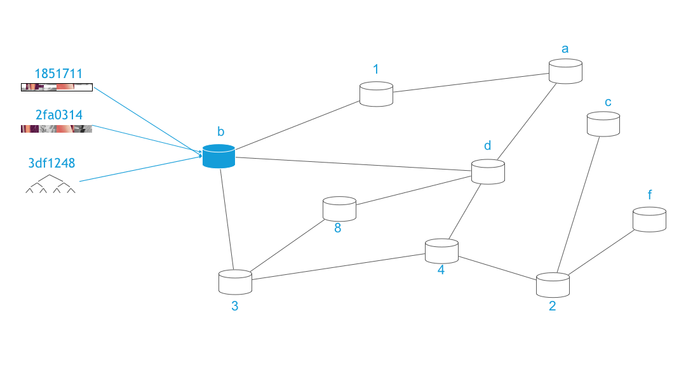
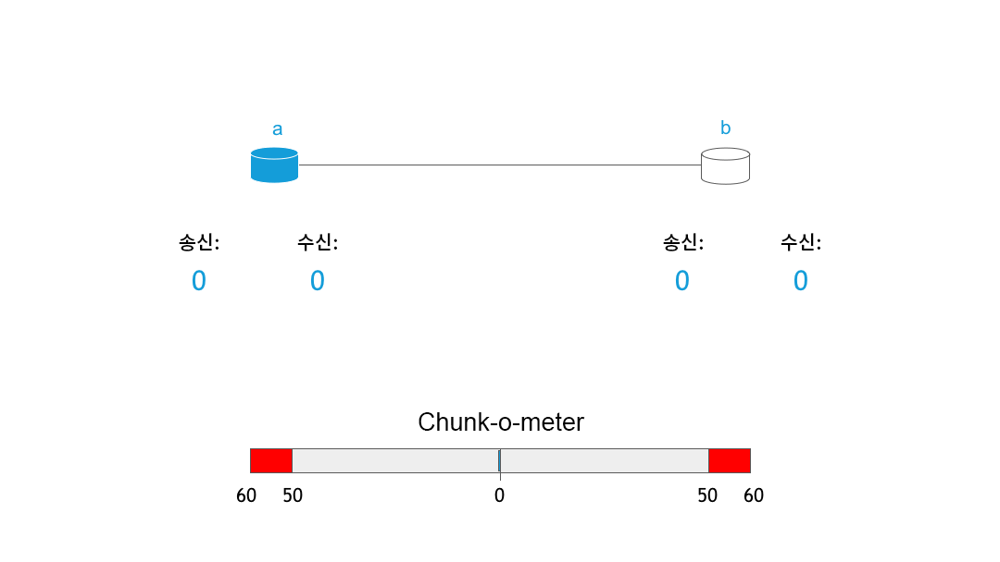

RIF 저장소: 첫 번째 청크
Vojtěch Šimetka & Rinke Hendriksen2019년 7월 1일
몇 주 전에 저희는 구축에 대한 동기와 비전을 강조하는, 분산화된 저장소에 대한 첫 번째 글 을 선보였습니다. 그 이후로 많은 일들이 일어났습니다. 그 중에서도 일단 저희는 MVP의 범위를 결정하고, 중요한 질문에 답하였으며, 비전을 실현하기 위해 이더리움 Swarm 팀과 협력하기로 했습니다. 이 파트너쉽은 아주 중요합니다. 저희는 이로 인해 분산화된 저장소에 있어서 가장 인정받는 프로젝트 중 하나의 경험을 통해 배우고, 동시에 Swarm과 RIF저장소 모두에서 이를 실행할 수 있을 것입니다.
이 블로그 포스트에서는 그러한 파트너쉽이 어떻게 탄생하였는지 알려드리고 그에 따라 RIF 저장소가 어떻게 작동하는지에 대한 높은 수준의 개요를 제공할 것입니다.
협력의 시작
저희의 기존 블로그 게시물에서 읽으셨듯이, 분산화된 저장소는 더욱 공정한 사회를 실현하는 데 있어 아주 중요한 역할을 합니다. 이렇게 중요하기 때문에 많은 프로젝트가 이를 달성하려고 하는 것입니다. 그 프로젝트의 이름을 몇 가지만 대자면 다음과 같습니다. IPFS, Storj, Sia, MaidSafe 또는 Swarm이 모든 프로젝트는 중요한 차이점을 공유하고 있으나, 공통 분모는 세상에 퍼진 정보가 저장되고 그에 접근하는 방식을 바꾸고자 한다는 것입니다. 여기서 RIF는 명확한 두 번째 선발자 혜택을 갖게 됩니다. 이렇게 흥미로운 프로젝트와 그 장단점에 대해 모두 배울 수 있는 위치에 있기 때문입니다. 저희는 그래서 그것을 모두 실행하였습니다.
또 그러한 분석에 따라 저희에게 Swarm은 가장 기대되는 프로젝트였습니다. Swarm 프로젝트에는 기발한 디자인과 강력한 비전이 있고, 모든 프로젝트는 인센티브화되고 분산된 저장소를 실행할 수 있는 아주 명확한 길이 마련되어 있습니다(이에 대해서는 조금 후에 더 자세히 설명하겠습니다).
그와 동시에, Swam은 2019 마드리드 Swarm 회담을 준비하고 있었습니다. 저희는 여기에Vojtech Simetka와 Ale Banzas를 대표로 보냈습니다. 여기서 저희가 내린 결론이 확인되었으며 저희는 프로젝트의 상태에 대해 훨씬 더 명확하게 알 수 있었습니다. Swarm은 이론적인 수준에서는 굉장히 잘 계획되고 정의되어 있으나, 코어 저장소 외의 일부 기능, 즉 인센티브 메커니즘과 같은 기능은 아직 연구 조사 중이거나 실험 단계에 있다는 것이었습니다. 인센티브화되고 분산화된 저장소는 2차 레이어 결제 솔루션에 크게 의존합니다. 노드 인센티브화가 네트워크에 이로운 방식으로 작용하려면 소액 결제가 아주 중요한 역할을 하기 때문입니다. 저희 팀은 2차 레이어 결제 솔루션에 대한 풍부한 경험이 있으므로(RIF 결제 및 Lumino) Swarm 팀과 협력해 인센티브화된 저장소라는 비전을 실현할 수 있는 기회를 보았습니다.
그렇게 저희의 파트너쉽과 인센티브 트랙트랙이 탄생하게 되었습니다. 이 트랙은 Swarm의 Fabio Barone과 RIF 저장소 팀의 Vojtech Simetka가 공동으로 진행한 것으로, Swarm 팀이 수행한 연구 조사에 크게 의존하며 인센티브화된 데이터 저장소의 최소한의 구현을 실현하는 것을 목표로 할 것입니다(MVP 범위 참조). 추가적인 목표는 앞으로 3개월 안에 고유 EVM 통화(RBTC나 ETH 같은)와 ERC20 토큰(RIF와 같은) 모두에 대한 지원을 구축하는 것입니다.
RIF 저장소 및 Swarm의 기본 사항
이 부분에서는 분산화된 저장소(이 경우 Swarm)가 어떻게 작동하고 인센티브화가 어떤 역할을 하는지에 대해 높은 수준에서 설명하고자 합니다. 자세한 설명은 공식 Swarm 설명서를 참조하십시오.
사용자가 분산화된 저장소에서 기대하는 두 가지 주요 행동은 자신의 파일을 업로드하고 다운로드하는 것입니다. 그럼 먼저 업로드가 어떻게 진행되는지 설명하겠습니다. 여기에서는 다음 세 가지 단계를 식별하였습니다.
- 노드에 파일 업로드하기
- 파일 준비하기(청킹 및 암호화)
- 청크를 네트워크에 배포하기
첫 번째 단계는 아주 간단합니다. 사용자는 예를 들어서 swarm up <파일 이름> 명령을 사용하거나 가까운 미래에는 RIF 저장소 UI로 사용자 인터페이스를 통해, 실행 중인 Swarm 노드에 연결해 파일을 업로드합니다. 두 번째 단계에서 파일은 네트워크에 업로드 될 준비가 되어 있습니다. 이 파일은 청크라고 불리는 아주 작은 부분으로 나뉘어지고, 청크는 추가 보안과 프라이버시를 위해 암호화됩니다. 이는 아래 gif에서 시각적으로 확인할 수 있습니다.

이 청크는 무결성을 제공하는 머클 트리에 매핑됩니다. 아래 이미지는 그런 트리가 어떤 모습일지를 보여줍니다.

이 트리에서 잎사귀는 각 청크의 해시가 차지하고, 트리의 뿌리는 전체 파일의 해시를 대표합니다. 이 해시는 청크의 무결성을 보장하기 위한 검사 합계와 네트워크 내 위치를 표시하는 두 가지 방법으로 사용됩니다. 청크는 노드의 주소와 그 컨텐츠 해시 간의 XOR 거리에 따라 배포됩니다. 체계적으로는 다음과 같은 모습입니다.

파일의 다운로드 과정은 대부분 동일한 알고리즘을 따르나 이를 역순으로 수행합니다. 사용자는 네트워크에서 머클 트리의 루트 해시로 파일을 요청하고, 이 파일은 개별 노드의 청크 요청으로 해석됩니다(머클 트리의 잎사귀 노드). 최종적으로, 청크는 암호화되고 파일은 집합됩니다.
인센티브화에 대하여
기존에 논의한 것처럼, 인센티브화는 위에 설명된 것과 같은 네트워크에 아주 중요한 역할을 합니다. 왜냐구요? 먼저 여러분의 하드 드라이브에서 청크를 쪼개고 저장하고 제공할 수 있게 노트북을 연결하여 하루 24시간 동안 켜 놓고 싶으신지 잠시 생각해 보십시오. 싫다고요? 여러분은 혼자가 아닐 겁니다. 그럼 또 다른 질문을 하겠습니다. 여러분이 청크를 제공하고 건강한 네트워크에 기여하고 싶게 만드는 것은 무엇일까요?
Swarm은 Swarm 회계 프로토콜(SWAP)을 정의합니다. 이는 노드가 요청하고 제공하는 데이터를 계산하는 맞대응 시스템입니다. 간단히 말해서 이것은 여러분이 저에게 백만 개의 청크를 요청하면, 그 댓가로 제가 여러분께 백만 개의 청크를 제공한다는 뜻입니다. 그러나 파일 저장소 네트워크에는 이에 대한 문제가 있습니다. 네트워크 이용뿐만 아니라(예를 들어 저는 비디오를 2시간 동안 스트리밍하고, 다음 4시간 동안 컴퓨터를 사용하지 않을 수도 있습니다) 노드 기능 차이(휴대폰은 서버처럼 많은 청크를 제공할 수 없습니다)에 대한 차이가 기대된다는 것입니다. SWAP은 노드가 자신의 잔액을 세게 하여, 노드가 여러분에게 많은 청크를 요청하는 경우, 여러분이 2차 레이어 결제 솔루션을 통해 결제 요청을 발행하게 합니다.

여기에 노드가 서로에게서 청크를 보내고 받으며 잔액이 청크 미터가 지나치게 한 쪽으로 치우쳤을 때 결산되는 SWAP 메커니즘이 나타나 있습니다.
이 디자인은 매우 간단하지만 분산화된 네트워크에는 아주 강력한 역할을 합니다. 비트코인과 암호화폐의 인기가 보여주듯, 잘 짜여진 인센티브는 노드가 네트워크의 건강에 이점이 되는 특정 방식으로 수행되도록 할 수 있습니다. 이 경우에 우리는 수익에 힘입은 노드가 네트워크에 참여해, 처리량이 높은 서버에서 가장 인기 있는 청크를 제공하여 네트워크를 더 튼튼하고, 빠르며 무너뜨리기 어렵게 만드리라고 예상합니다. 바로 저희가 원하는 바입니다! 추가로 이러한 시스템은 누구든지 무료로 RSK/이더리움 생태계에 입장할 수 있게 할 것입니다.
그 다음 단계
아시다시피 현재 저희는 아주 멋진 것들을 개발하느라 바쁩니다. 저희의 성과는 인센티브 보드에서 추적할 수 있습니다. 개발자인 경우, GitHub 문제 중 하나를 골라 도와주시거나, postage와 같은 연구 일부를 돕거나, 저희에게 연락해 함께 일할 방법을 찾아 주시면 감사하겠습니다. 그럼 다음 번에 RIF